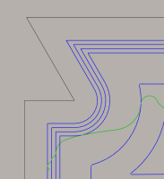

<div id="numberOfFinishingStepovers"><p>Specifica il numero di passate di finitura.</p>
<table class="tipTable" cellspacing="10">
<tr>
<td><center></center></td>
</tr><tr>
<td><center><p><b>Indicato con tre passate di finitura</b></p></center></td>
</tr></table>
</div>